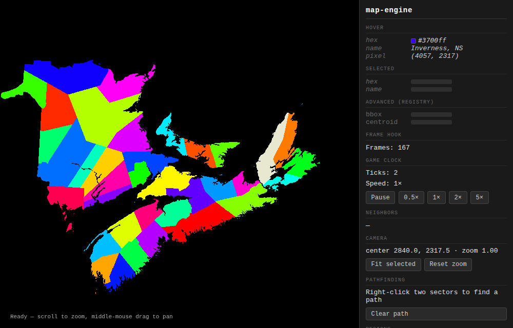

map-engine

A small TypeScript library that turns a PNG of flat-color regions and a JSON file into an interactive map. A recolor is one write to a GPU palette, and pathfinding runs in a Web Worker, so the frame never blocks. It weighs about 16 kB gzipped.